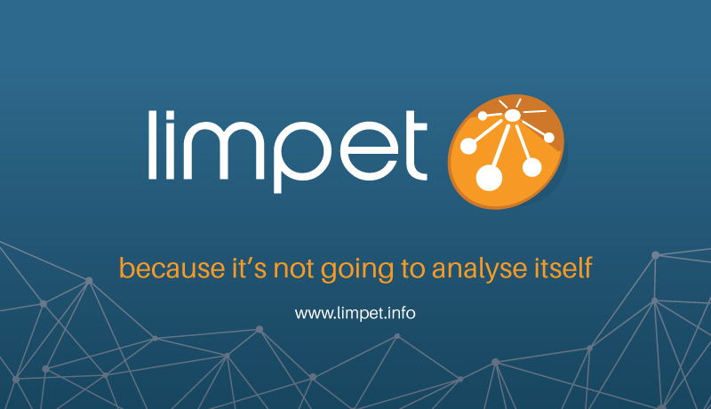
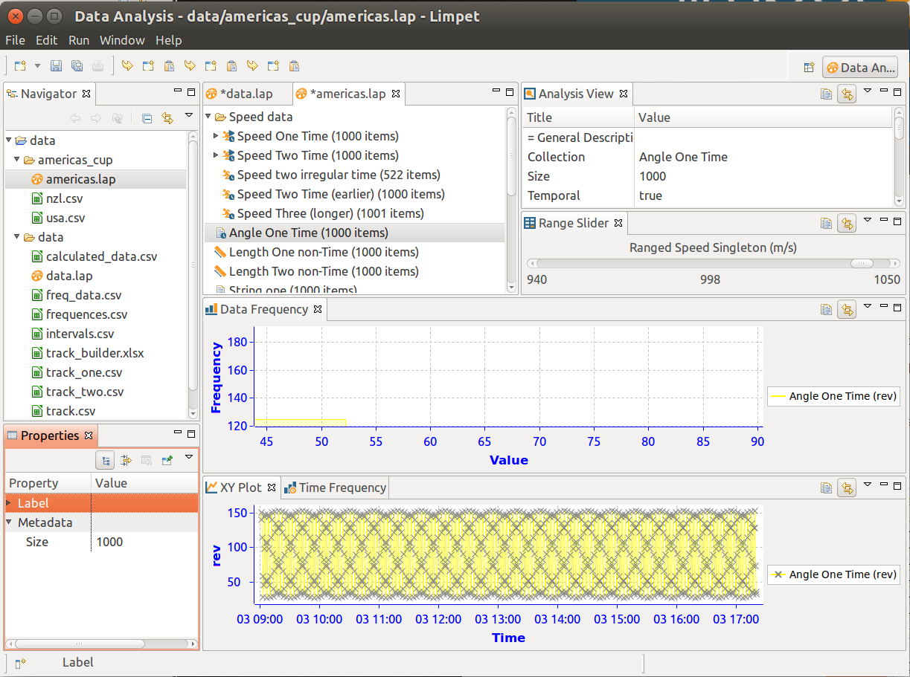

Welcome to Limpet
Welcome to the Lightweight InforMation ProcEssing Toolkit - Limpet.
July 2017
There has been a large block of development during the summer, which included the addition
of support for 2-dimensional datasets. Read more about the new capabilities
here

April 2017
An emergent requirement meant that Limpet needs to be able to index data by quantities other than time.
Support for time-series has been sufficient for all tasks we asked of Limpet so far, but now we need to
support data indexed by distance (as with a weather balloon ascent). Read more about supporting
non time-series data here.
For this new support we've adopted the
Eclipse January project.

December 2015
We've now got working software for you to play with. Learn how to download, install and get started with the application here
August 2015
Things are pretty embryonic right now - we're still going through high level requirements collection,. But, we hope to motor on through the high level questions, discussions, plans, designs, and get into some nice iterative/agile progress in early September.
Stay tuned for updates, or register to learn more from the mailing list
{kind=link}